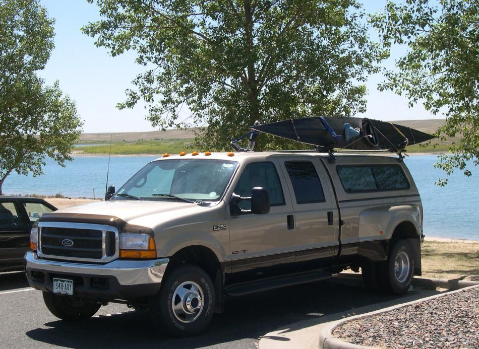

| Transport ( 3 of 6) | Menu Previous Page Next Page |
|

Thule "Hull-A-Port" carriers provide excellent support for the Sea Ranger folding kayak. The contact area is small, and the boat is supported in a more rigid on edge position. On a truck the size of this F-350, a small stepladder is required equipment.
|
|